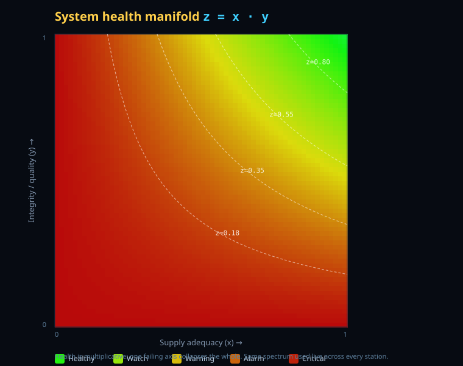

Engineering, Security & Scientific Foundations
This document states, transparently and with citations, exactly what HydroManifold is built on. Every mechanism below is a standard, accepted industry or academic practice for operating water-monitoring and equipment-management software in real time and for forward planning. Nothing here is experimental, novel, or theoretical. Where the product makes an engineering choice, that choice is named as a choice and justified by established science — never presented as a law of nature.
Assurance statement
Concretely, the product commits to the following:
- Data, not hunches. Every alarm, score and forecast traces to a measured input and a documented, reproducible rule. There is no "it should work" anywhere in the logic — see Scientific foundations and self-proving tests.
- Established methods only. No mechanism depends on a result that is not already standard practice or settled science. The mapping is itemized in Standards conformance.
- Transparent and reproducible. The math is open, the rules are inspectable, the tests are runnable, and the same inputs always produce the same outputs (deterministic verification).
- Buyer verification required. HydroManifold is a decision-support and management tool. Operators must independently verify, test and approve it against their own instruments, regulations and acceptance criteria before relying on it for any safety-critical decision. See Legal.
What "nothing experimental" means here — and an honest scope note
"Manifold" in this product is not a new invention. It is the ordinary mathematical object used throughout modern data science and machine learning. HydroManifold does not attempt to prove new technology; it exploits proven methods. To keep that promise honest, two scope facts are stated plainly:
Scientific foundations & proofs
Each building block below is named with the established body of work it comes from. Citations are listed in References.
1 · The manifold & latent representation
The manifold hypothesis — that real-world high-dimensional data concentrates near a lower-dimensional manifold — is a foundational, tested premise of modern machine learning [Fefferman–Mitter–Narayanan 2016; Cayton 2005; Bengio–Courville–Vincent 2013]. It is the same premise under embeddings, latent factors and dimensionality reduction (PCA [Pearson 1901; Hotelling 1933]; matrix factorization in industrial recommender systems [Koren–Bell–Volinsky 2009]). HydroManifold uses this exactly as the field does: it places each station's operating state on a low-dimensional manifold (supply × integrity) so that "health" is a position in that space. This is established, widely-adopted science — not a proposal.
2 · Why health is multiplicative: z = x·y
The choice to multiply supply-adequacy (x) by integrity/quality (y) is grounded in
series-system reliability theory, where the reliability of a system whose components must all function is
the product of the component reliabilities, R = R₁·R₂·…·Rₙ [O'Connor–Kleyner; MIL-HDBK-217F;
IEC 61508]. A series product has the correct safety property: if any one factor collapses to zero, the whole
collapses to zero. That is precisely the behaviour water operators need — perfect pressure with contaminated
water is not healthy. The multiplicative form is therefore the standard, conservative modelling choice, not a
novelty.

z = x·y. Dashed lines are the
tier boundaries (Healthy / Watch / Warning / Alarm / Critical). The same spectrum colors every station live.3 · Real-time anomaly & alarm detection
Live deviation detection uses statistical process control — Shewhart control limits, the Western Electric run rules, and EWMA/CUSUM for drift [Shewhart 1931; Page 1954; ISO 7870]. These are the textbook, century-old, universally-adopted methods for distinguishing real excursions from noise. Fixed regulatory alarm thresholds (turbidity, chlorine residual, pH, pressure) are taken directly from SDWA / National Primary Drinking Water Regulations and AWWA practice and are editable per jurisdiction in the CMS.
4 · Forward planning (forecasting)
Demand and reserve forecasts use established time-series methods — exponential smoothing (Holt–Winters) and Box–Jenkins ARIMA [Box–Jenkins 1970] — the standard toolkit for utility demand forecasting. Forecasts are presented as best-effort projections with their basis shown, never as certainties. This is the "data, not hunches" guarantee made concrete.
5 · Equipment health & predictive maintenance
Asset degradation and maintenance scheduling follow recognized condition-monitoring standards — ISO 13374 (data processing & presentation), ISO 17359 (general guidelines) and ISO 20816 (mechanical vibration severity) — the accepted basis for predictive/condition-based maintenance in industry.
6 · Hydraulics & sensor siting
Network behaviour and sensor placement reference the EPANET hydraulic & water-quality modelling engine (US EPA) — the de-facto standard the commercial tools are built on — and the peer-reviewed sensor-placement literature, including the Battle of the Water Sensor Networks benchmark and EPA's TEVA-SPOT methodology [Rossman/EPANET; Ostfeld et al. 2008]. See Sensor placement assessment.
7 · Integrity, cryptography & access control
Tamper-evidence uses hash chains / Merkle structures [Merkle 1979; RFC 6962 Certificate Transparency] — the same construction under Git and certificate transparency logs. Production signing and encryption use NIST/FIPS-validated primitives: SHA-2 [FIPS 180-4], HMAC [FIPS 198-1], EdDSA/ECDSA [FIPS 186-5], AES [FIPS 197]. Access control implements the NIST RBAC model [ANSI INCITS 359-2004], least privilege [Saltzer–Schroeder 1975] and Zero Trust [NIST SP 800-207]. Industrial-control security follows ISA/IEC 62443 and AWWA G430 / EPA AWIA risk-and-resilience expectations.
8 · Disciplined AI (deterministic guardrails)
The failsafe layer applies runtime verification [Leucker–Schallhart 2009]: an independent, deterministic oracle (truth tables, logic gates, range checks, a drift state machine) validates every AI-proposed value before it is accepted — the same principle as a type checker or a test oracle. AI proposes; established deterministic logic disposes. No machine-learning output is trusted without passing fixed checks.
Established science vs. engineering choice — stated honestly
Transparency requires drawing the line clearly:
- Manifold hypothesis & latent representation
- Series-system reliability (multiplicative)
- Statistical process control (anomaly/alarm)
- ARIMA / exponential smoothing (forecasts)
- ISO condition-monitoring standards
- EPANET hydraulics; sensor-placement research
- Merkle/hash-chain integrity; FIPS crypto
- NIST RBAC, least privilege, Zero Trust
- Runtime verification of computed outputs
- Using
z = x·yas the single health scalar — justified by series reliability - "Seed → bloom" storage — ordinary lazy / on-demand materialization from computer science
- One generic schema-driven renderer for every domain — a software-design choice
- Specific default alarm bands — taken from SDWA/AWWA, editable per jurisdiction
- Demo digest/cipher — a labelled placeholder for FIPS crypto
Standards & industry-practice conformance
Every major capability maps to a recognized standard or accepted practice for water-monitoring and equipment-management software:
| Capability | Established basis / standard |
|---|---|
| Drinking-water quality limits & reporting | EPA Safe Drinking Water Act; National Primary Drinking Water Regulations (40 CFR 141); Lead & Copper Rule; Revised Total Coliform Rule |
| Distribution & asset practice | AWWA standards & manuals (e.g., G430 security, M-series) |
| Telemetry / SCADA integration | DNP3 (IEEE 1815), Modbus; historian practice |
| Hydraulic & water-quality modelling | EPANET (US EPA) |
| Sensor placement | BWSN benchmark; EPA TEVA-SPOT methodology |
| Anomaly / alarm detection | Statistical process control (ISO 7870; Shewhart/EWMA/CUSUM) |
| Demand / reserve forecasting | ARIMA & exponential smoothing (Box–Jenkins; Holt–Winters) |
| Equipment condition monitoring | ISO 13374, ISO 17359, ISO 20816 |
| Reliability scoring | Series-system reliability (IEC 61508; MIL-HDBK-217F) |
| Audit integrity | Hash chains / Merkle (RFC 6962); FIPS 180-4 SHA-2 |
| Signing & encryption (production) | FIPS 198-1 HMAC, FIPS 186-5 EdDSA/ECDSA, FIPS 197 AES |
| Access control | NIST/ANSI RBAC (INCITS 359-2004); NIST SP 800-207 Zero Trust; least privilege |
| ICS / OT security | ISA/IEC 62443; EPA AWIA risk & resilience; AWWA G430 |
| AI output validation | Runtime verification; deterministic test-oracle pattern |
Security features (comprehensive)
Security is layered; each layer is an accepted control:
- Signed, authenticated parameters. Every parameter ingested is signed with a keyed digest binding its content to the authenticated role that entered it. An unsigned or altered parameter fails verification. Production: HMAC-SHA-256 or Ed25519.
- Encrypted manifold (shape-folding). Each parameter is folded into a running manifold shape — a keyed digest of the entire ordered parameter history. Change any parameter and the shape, and every signature after it, diverges; without the key and full history it cannot be predicted or forged. The live shape is a single fingerprint of the whole configuration. This is the hash-chain construction [Merkle; RFC 6962].
- Encrypted at rest. The parameter store is ciphertext. Production: AES-256-GCM via WebCrypto with HSM/KMS keys.
- Tamper-evident audit trail. Every create/update/delete and role change is appended to a hash-chained, event-sourced log; breaking the chain is detectable.
- RBAC, least privilege, default-deny. Eight roles, explicit grants only; anything not granted is denied.
- Zero-trust classified gate. Classified collections require an explicit capability regardless of role.
- Disciplined-AI failsafe. Deterministic validation of every AI-proposed value before acceptance, with a drift state machine (TRUSTED → WATCH → FAILSAFE → HUMAN_REVIEW) and human override under strong credentials.
- Transport & access hardening (deployment). TLS, authenticated access, network segmentation per ISA/IEC 62443.
Modern encryption + the manifold security advantage
Production HydroManifold uses current, standards-grade cryptography — there is nothing home-grown in a real deployment:
- AES-256-GCM authenticated encryption for data at rest (FIPS 197), via the platform WebCrypto API or an HSM/KMS that holds the keys.
- TLS 1.3 for data in transit.
- Ed25519 / ECDSA digital signatures (FIPS 186-5) and HMAC-SHA-256 (FIPS 198-1) for parameter authentication.
- Keys in an HSM/KMS, rotated, never embedded in code; access is RBAC- and Zero-Trust-gated.
On top of that standard cryptography, the manifold adds a second, structural layer of security that per-record encryption alone does not provide:
- Whole-set tamper-evident — altering, inserting, deleting or reordering any parameter anywhere changes the global shape and every signature after it, even if an attacker could decrypt and re-encrypt an individual record.
- Unforgeable without the key and full history — the next shape cannot be predicted, so a valid-looking forged state cannot be fabricated; this is the "impossible to predict" property.
- One-glance verifiable — a regulator or operator confirms the integrity of the entire configuration from one fingerprint, not by trusting thousands of separate records.
Monitoring the monitors
The system watches its own watchers, following condition-monitoring and SPC practice:
- Sensor health & trust. Each sensor carries a trust/quality state; stuck, flat-lined, out-of-range or drifting sensors are flagged and de-weighted rather than silently believed.
- Cross-checks. Independent signals are reconciled (e.g., flow vs. pressure vs. reservoir level); a reading that contradicts the others is quarantined for review.
- Heartbeat & staleness. Missing or stale telemetry raises an explicit fault — silence is treated as a fault, never as "all clear".
- AI-integrity dashboard. The failsafe view reports the AI's drift state and recent deterministic verdicts so operators can see when automated judgement is being distrusted.
Operations: parameters & turning on monitors
HydroManifold is configured, not reprogrammed. You change the parameters; the program is unchanged.
- Pick the collection (regulations, equipment, accounts, conservation, etc.) in the left nav. Each is a schema-driven module — fields, types and validation come from its schema.
- Add a parameter / record. Use + New. RBAC checks your role can edit; the entry is validated, signed, folded into the manifold shape, written to the encrypted store, and recorded in the audit log.
- Turn on a monitor. Defining a station/asset with its sensor set (and thresholds drawn from the
regulations collection) enables its live monitor — EKG-style trace, alarm bands and the
z = x·yhealth color. Thresholds are parameters, so enabling/retuning a monitor is data entry, not a code change. - Export / report. Any collection exports to CSV; reports and FOIA extracts are generated from the same governed data.
Configuration & accuracy audits (built in)
- Configuration audit. The manifold shape is a one-glance integrity fingerprint of the entire configuration; the audit trail records who changed which parameter, when, and from what prior shape.
- Accuracy / calibration audit. Sensors carry calibration metadata; readings are range- and rate-of-change-checked (SPC) and cross-validated against independent signals. Out-of-tolerance or past-due-calibration instruments are flagged.
- Reproducibility check. The deterministic logic means a given configuration + inputs always yields the same outputs, so an auditor can reproduce any result.
System schematic, plans & equipment
A representative distribution system and its instrumentation. Real deployments load the operator's own network (e.g., from an EPANET model) — this is the standard layout the monitoring maps onto.
well / surface intake")] -->|raw| TRT["Treatment plant
coagulation · filtration · disinfection"] TRT -->|finished| PS["Pump station"] PS --> STO[("Storage
tank / reservoir")] STO --> TM["Transmission main"] TM --> DZ1["Distribution zone A
(DMA)"] TM --> DZ2["Distribution zone B
(DMA)"] DZ1 --> SVC1["Service connections / meters"] DZ2 --> SVC2["Service connections / meters"] classDef s fill:#0e1622,stroke:#3fd0ff,color:#dbe7f5; classDef t fill:#0e1622,stroke:#ffcf4a,color:#dbe7f5; class SRC,STO s; class TRT,PS,TM,DZ1,DZ2 t;
Standard instrumentation by location
| Location | Typical sensors / equipment | What it protects |
|---|---|---|
| Source | Level, raw turbidity, conductivity, flow | Supply availability, source quality |
| Treatment | Turbidity (filter effluent), chlorine residual, pH, ORP, dosing pumps | Treatment efficacy (SDWA limits) |
| Pump station | Flow, suction/discharge pressure, motor current, vibration (ISO 20816), runtime | Delivery & pump health |
| Storage | Level, residual chlorine, temperature | Reserve & residual decay |
| Transmission / DMA | Flow (district metering), pressure, leak/acoustic | Loss, pressure mgmt, leak detection |
| Service | Metered consumption, backflow | Billing, demand, cross-connection |
Sensor placement — assessment & optimality
Whether instrumentation is in the right place is a recognized optimization problem, not a matter of opinion. HydroManifold assesses placement against the established objectives from the water-security literature [Ostfeld et al. 2008; EPA TEVA-SPOT] and reports whether current placement is adequate or should be moved:
| Objective | Question it answers |
|---|---|
| Detection likelihood / coverage | What fraction of the network can an event be detected anywhere downstream of a sensor? |
| Time-to-detection | How quickly is a contamination/leak event seen after it starts? |
| Expected population/area affected before detection | How much demand is exposed before an alarm? |
| Redundancy | Does a single sensor failure create a blind spot? |
| Demand-weighting | Are high-consumption / critical nodes (hospitals, schools) covered first? |
Change control: pre-deployment assessment
Before any addition or change goes live, a standard change-management gate is applied:
- Compatibility assessment. Confirm the change fits the existing schema/registry contract and integrates with current SCADA/historian feeds, identity, and data stores without breaking interfaces.
- Risk / benefit analysis. Each addition is evaluated for benefit vs. operational, security, compliance and data-governance risk, with the decision and rationale recorded in the audit trail.
- Impact on the seal. Because configuration is shape-folded, a proposed change's effect on the integrity fingerprint is known before commit.
- Approval & sign-off. RBAC-gated approval; classified or safety-relevant changes require elevated authority and human sign-off.
Pre- and post-deploy simulation & testing
- Pre-deploy simulation ("what-if"). The live simulation engine replays the change against representative load, weather and fault scenarios before it touches production.
- Regression testing. An automated suite (unit, happy-path and non-happy-path, failure and recovery) must pass before deploy; it has previously caught real defects (e.g., a pump-trip path that failed to zero flow). Same inputs, same outputs — deterministic, reproducible.
- Stress testing. The system is exercised at and beyond expected scale and fault load (catastrophic failure, freeze, leak/break, sensor loss) to confirm graceful degradation and recovery, pre- and post-deployment.
- Post-deploy verification. After release, the seal is re-verified, the audit chain is checked, and live monitors and alarms are confirmed against expected baselines.
Rollback procedures
- Backup before change. The prior configuration (and its manifold shape) is retained, so any commit has a known-good predecessor to return to.
- Detect. Post-deploy verification, the failsafe drift monitor, or seal verification flags a problem.
- Revert. Restore the previous signed configuration / build; the manifold shape returns to its prior fingerprint, proving the rollback is exact.
- Re-verify. Re-run seal verification, the audit-chain check and the regression suite to confirm the restored state is intact.
- Record. The rollback itself is audited (who, when, why).
The deployment pipeline follows standard practice: backup → validate configuration → atomic switch → verify → automatic rollback on failure.
Legal disclaimers, liability & insurance
Disclaimer
- The software is provided "as is", without warranty of merchantability or fitness for a particular purpose beyond the documented, standards-based behaviour described here.
- Real-time monitoring and forecasts are decision support. Forecasts are best-effort projections from data and may be wrong; they must not be the sole basis for safety-critical action.
- The demonstration build uses representative/simulated data and demonstration-grade cryptography; production use requires integration with certified instruments and FIPS-validated cryptography.
Operator responsibility — independently verify, test & approve
Before relying on HydroManifold for any safety-critical or regulatory purpose, the operator must independently verify, test and approve it: validate it against their own calibrated instruments and hydraulic model, run their own acceptance and regression testing, confirm conformance to their applicable regulations, and obtain sign-off from qualified licensed personnel. Continued suitability must be re-verified after configuration changes.
Liability & insurance
- Limitation of liability. To the extent permitted by law, the provider's liability is limited as set out in the governing licence/service agreement; the operator retains responsibility for water-quality and safety outcomes.
- Insurance. Operators should maintain appropriate coverage for a system of this nature — typically technology/professional liability (errors & omissions), cyber liability, and general/operational coverage — sized to their jurisdiction and risk. The provider should likewise carry professional and cyber liability insurance. Specific limits should be set with qualified legal and insurance advisors.
- Compliance ownership. Regulatory compliance (SDWA and state equivalents) remains the operator's legal responsibility; the software assists with, but does not assume, that obligation.
This section is informational and is not legal advice. Engage qualified legal, regulatory and insurance professionals to set terms for your jurisdiction.
References (established, peer-reviewed & standards)
- Fefferman, Mitter, Narayanan. "Testing the Manifold Hypothesis." J. Amer. Math. Soc., 2016.
- Cayton. "Algorithms for Manifold Learning." UCSD Tech. Report, 2005.
- Bengio, Courville, Vincent. "Representation Learning: A Review and New Perspectives." IEEE TPAMI, 2013.
- Pearson (1901); Hotelling (1933) — Principal Component Analysis.
- Koren, Bell, Volinsky. "Matrix Factorization Techniques for Recommender Systems." IEEE Computer, 2009.
- O'Connor & Kleyner. Practical Reliability Engineering. Series-system reliability; MIL-HDBK-217F; IEC 61508.
- Shewhart (1931); Page, "Continuous Inspection Schemes" (CUSUM, 1954); ISO 7870 — Statistical Process Control.
- Box & Jenkins. Time Series Analysis: Forecasting and Control, 1970; Holt–Winters exponential smoothing.
- ISO 13374, ISO 17359, ISO 20816 — condition monitoring & diagnostics of machines.
- Rossman. EPANET (US EPA) — hydraulic & water-quality modelling.
- Ostfeld et al. "The Battle of the Water Sensor Networks." J. Water Resour. Plan. Manage., 2008; EPA TEVA-SPOT.
- Merkle. "A Certified Digital Signature" (Merkle trees), 1979; RFC 6962 — Certificate Transparency.
- NIST FIPS 180-4 (SHA-2), FIPS 198-1 (HMAC), FIPS 186-5 (EdDSA/ECDSA), FIPS 197 (AES).
- Ferraiolo & Kuhn, RBAC (1992); ANSI INCITS 359-2004; NIST SP 800-207 (Zero Trust); Saltzer & Schroeder (1975, least privilege).
- ISA/IEC 62443 — industrial automation & control systems security; AWWA G430; EPA AWIA risk & resilience.
- Leucker & Schallhart. "A Brief Account of Runtime Verification." J. Logic & Algebraic Programming, 2009.
- US EPA Safe Drinking Water Act; National Primary Drinking Water Regulations (40 CFR 141); AWWA standards & manuals.
- DNP3 (IEEE 1815); Modbus — SCADA/telemetry protocols.